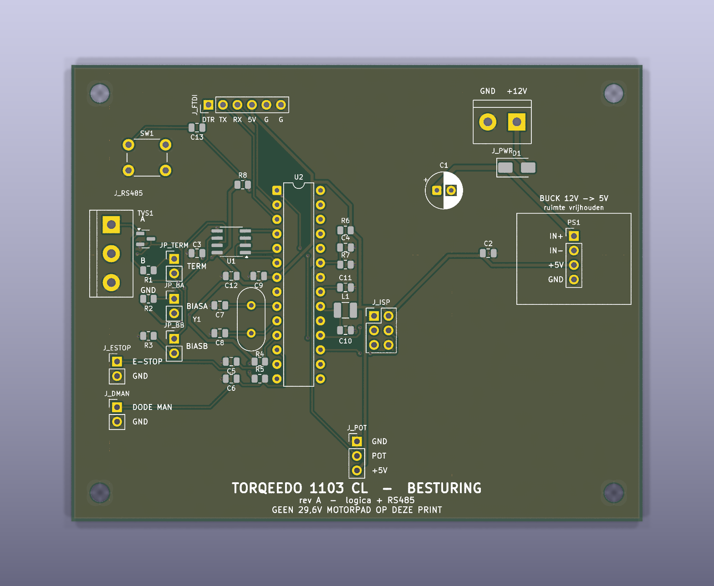
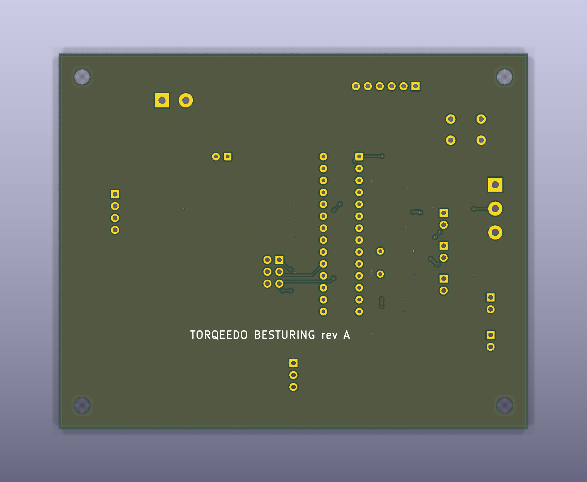

Both views are straight out of KiCad 9. The back looks almost empty on purpose: it is a continuous ground plane, and every crossover that breaks it is a compromise paid for in return-path quality.


The schematic carried a placeholder: a 1×4 pin header, four pads in one straight row on a 2.54 mm pitch. That is what is on the board today.
| Pad | Net | Assumed | At |
|---|---|---|---|
| 1 | +12V_PROT | IN+ | 88.00, 30.00 |
| 2 | GND | IN− | 88.00, 32.54 |
| 3 | +5V | OUT+ | 88.00, 35.08 |
| 4 | GND | OUT− | 88.00, 37.62 |
An MP1584EN mini puts its input pair at one end of a 22 mm board and its output pair at the other. Four pads inside a 7.62 mm row cannot reach both. PS1 needs a new footprint and a local re-route — not a pin-order change.
Nothing else on the board depends on it. Everything up to the +12V_PROT
and +5V nets stays exactly as routed.
I went looking for the real dimensions and came back empty, which is itself the finding. Sellers agree on 22 × 17 × 4 mm overall; none of them publish hole coordinates, and the modules vary batch to batch. components101 links a dimension drawing that contains no numbers. The only trustworthy source is the one in your hand.
Rather than guess a pair pitch, the sheet gives you a 1 mm coordinate grid. It works whatever the layout — pads at the ends, pads across the width, or anything else.
+ in each pair.
I’ll build the footprint, re-route PS1 and re-run DRC.Build a footprint from your coordinates as two 1×2 headers rather than one block, so the module sits in a socket and comes off without a soldering iron. On a boat that matters more than it does on a bench, and short wire links absorb a millimetre of mismatch if the next module differs.
Then re-route the two nets, re-run DRC and the netlist
cross-check, regenerate the Gerbers, and tag it pcb-rev-B. Rev A stays
where it is, so nothing is lost.